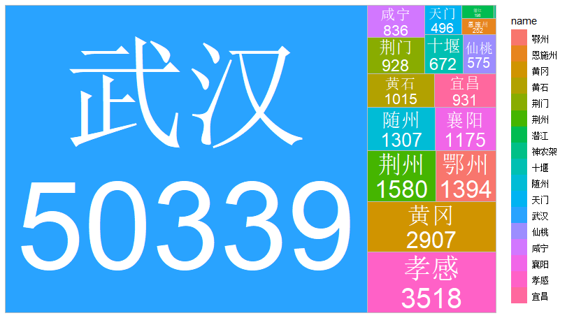
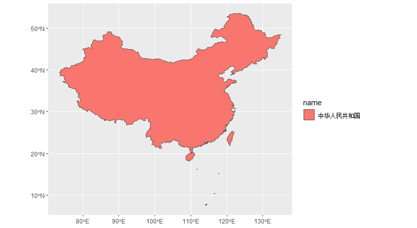

R学习资源
| 相关学习资源 | |
|---|---|
| 期刊 | R Journal |
| 图书 | R Bookdown |
| 博客 | R Bloggers |
| 教程 | W3CSchool |
| 视频 | R语言基础 |
R语言学习
R 简介
R是一套由数据操作、计算和图形展示功能整合而成的套件。包括：有效的数据存储和处理功能，一套完整的数组（特别是矩阵）计算操作符，拥有完整体系的数据分析工具，为数据分析和显示提供的强大图形功能，一套（源自S语言）完善、简单、有效的编程语言（包括条件、循环、自定义函数、输入输出功能）。
练习：R+新冠
library(nCov2019)
library(ggplot2)
library(treemap)
library(treemapify)
library(dplyr)
x<-get_nCov2019()
d<-x['湖北',]
ggplot(d, aes(area = confirm, fill = name, label = paste(name, confirm, sep="\n")))+
geom_treemap()+
geom_treemap_text(frontface = "italic", colour = "white", place = "centre",grow = TRUE)

武汉
练习：R+地图
url<-"https://geo.datav.aliyun.com/areas/bound/100000.json"
url
length(url)
library(rjson)
require(rjson)
json<-rjson::fromJSON(file = url)
json
summary(json)
class(json)
toJSon<-rjson::toJSON(json)
write(toJSon,"cn100000.json")
cn100000<-rjson::fromJSON(file = "cn100000.json")
cn<-sf::st_read(dsn="cn100000.json",stringsAsFactors=F)
library(ggplot2)
p<-ggplot()+
geom_sf(data = cn,aes(fill=name))

中国
R blogdown学习
R blogdown是什么
R语言的一个扩展包，用来制作网站的工具。 可以用非常简洁的方式快速搭建静态网页构成的网站。 虽然名字里有“博客”（blog）字样，但并不仅限于博客。非常适合搭建一个科研小组的展示窗口。 基于 markdown 扩展语法，可以在网页中方便地插入图表、脚注、数学公式、R 代码等元素。 非常容易将 bookdown 生成的论文转化成网页展示。 非常易于维护，迁移，备份。